mujoco-viser-usage
MuJoCo robots in the browser, rendered with Viser. Interactive scenes, contact-driven demos, a PPO control room, and a native mjlab (MuJoCo-Warp) backend.
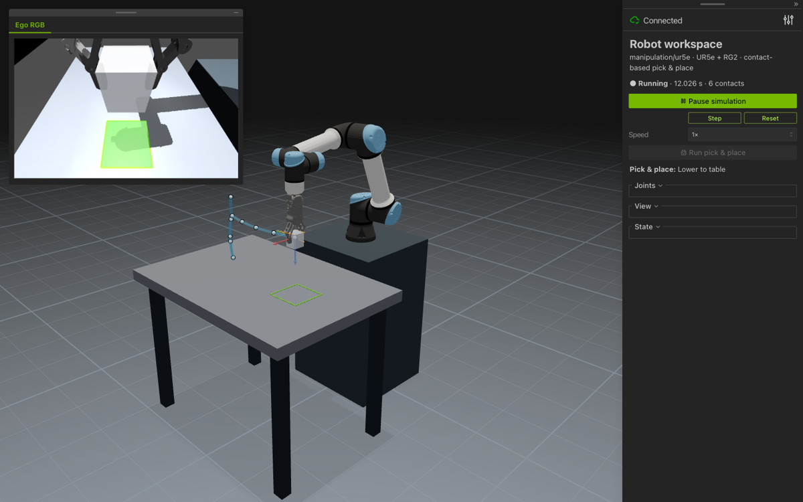
Scenes
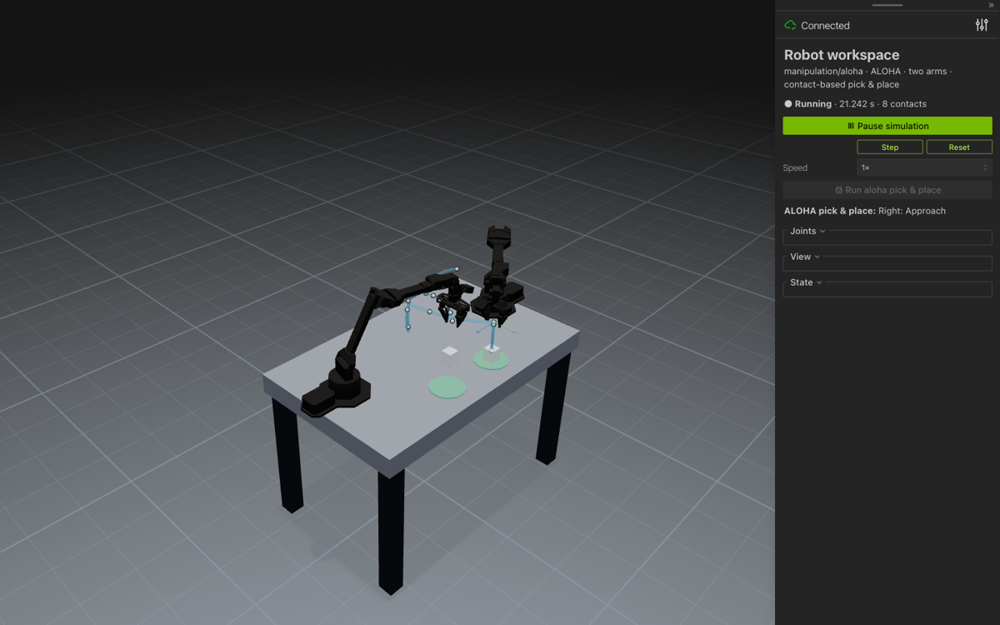
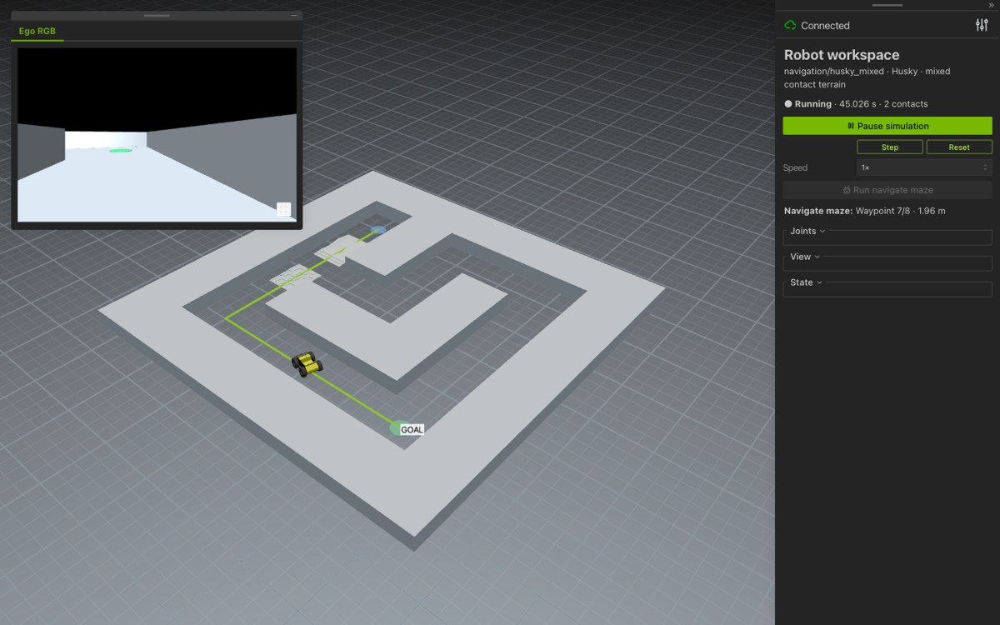
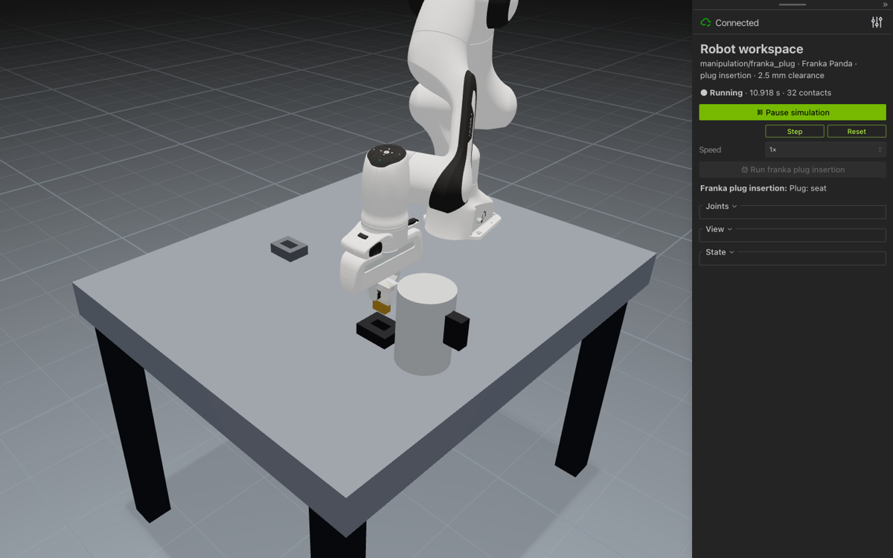
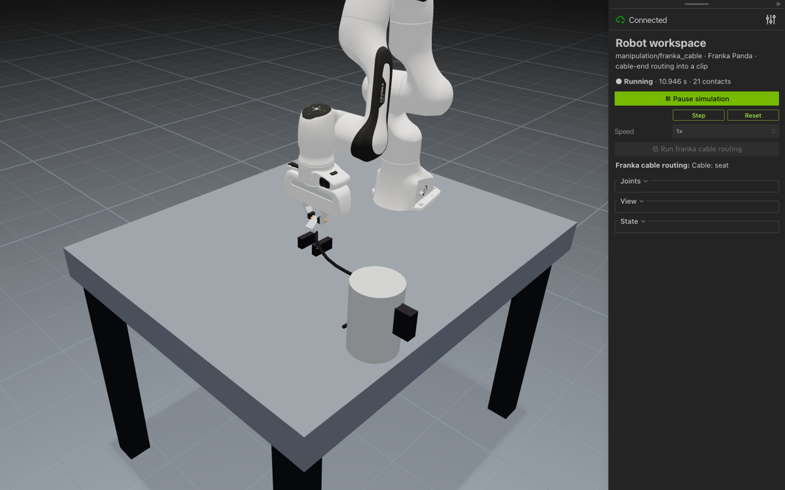
NIST Assembly Task Board #1
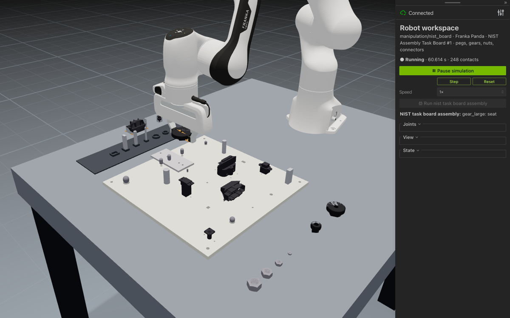
RL
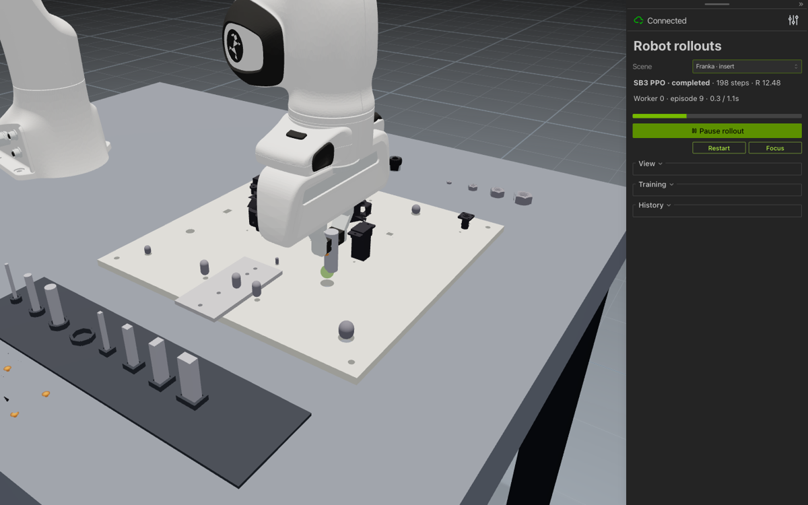
franka_insert · peg in hole from force feedback. Hole and in-hand offsets are hidden;
straight-down insertion gets 6/10, PPO 10/10 after 580k steps.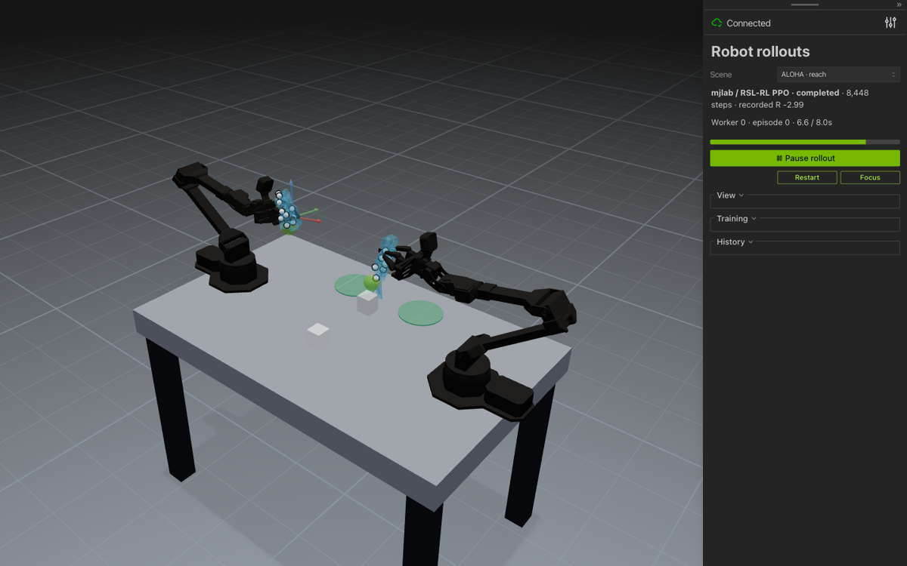
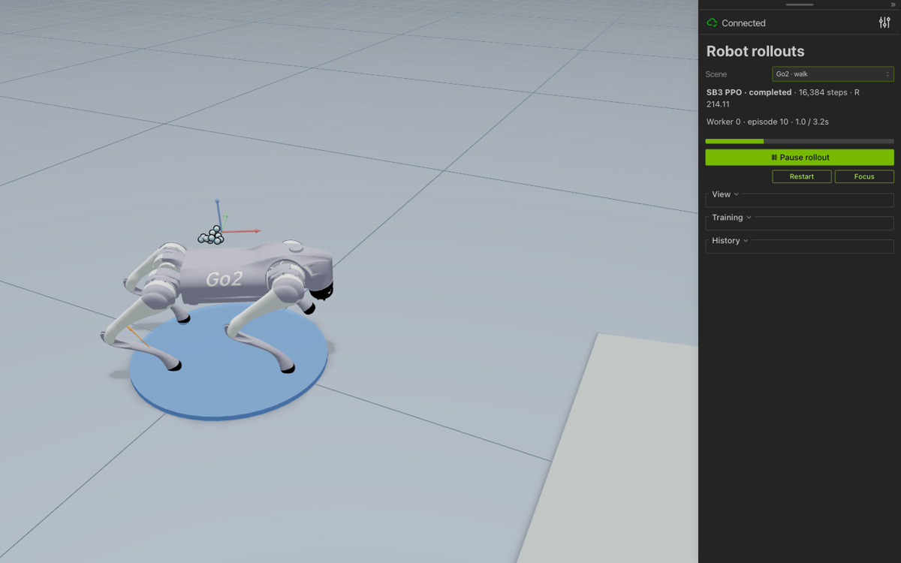
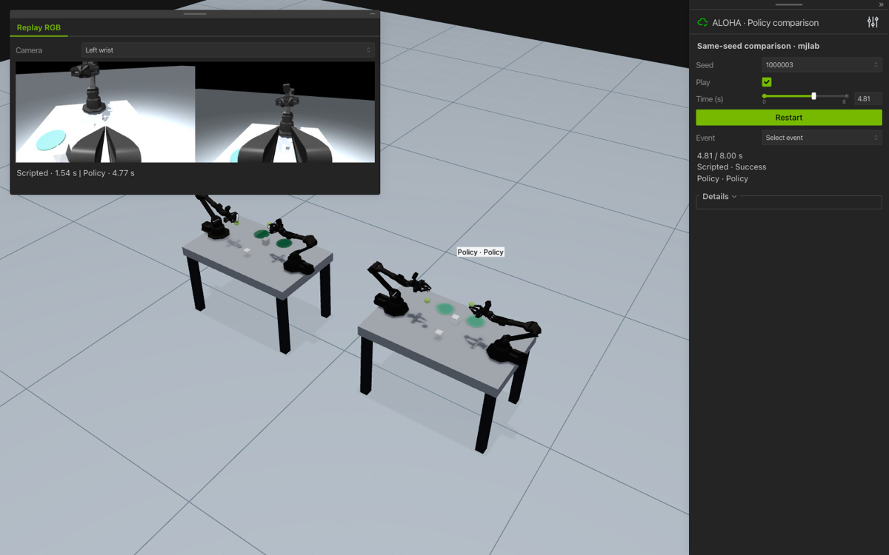
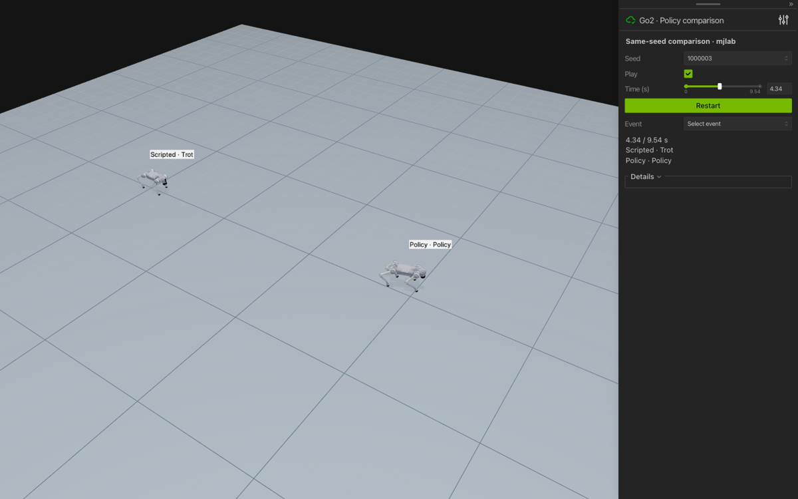
Quick start
uv sync
uv run mujoco-viser-usage # http://127.0.0.1:8080
uv run mujoco-viser-usage manipulation/nist_board --demo
uv run --extra rl mujoco-viser-rl --port 8090 # PPO control room
uv sync --extra mjlab # MuJoCo-Warp backend